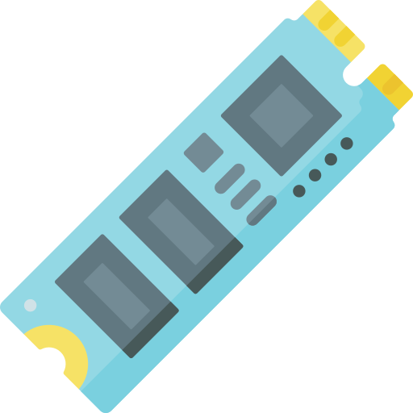
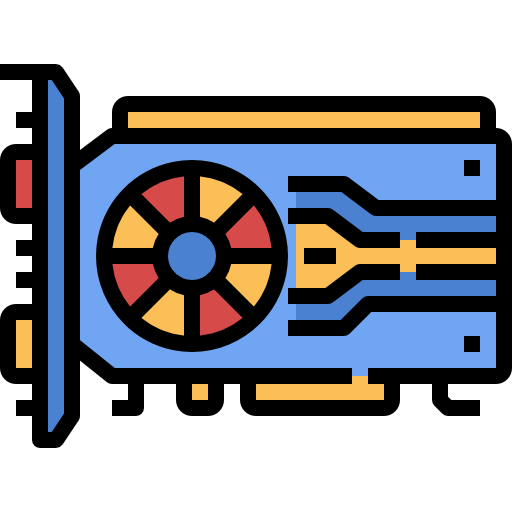
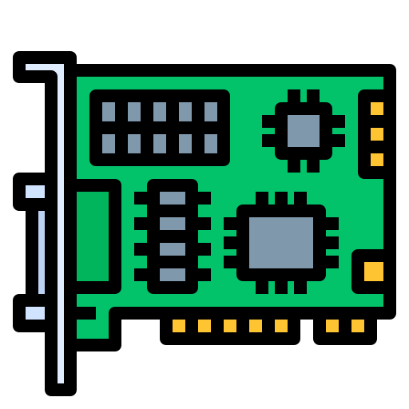
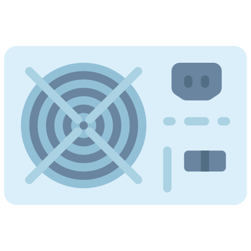
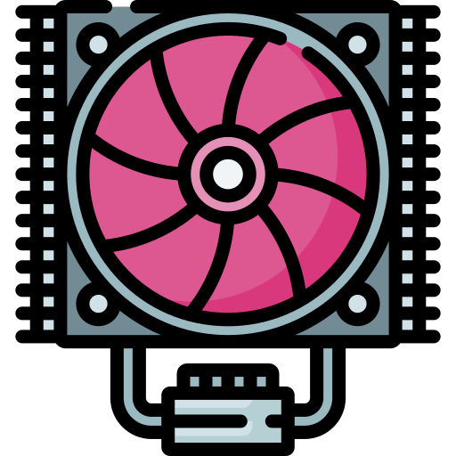

Számítógép Felépítése
Összetevők
 |
|
Alaplap |
Az alaplap a számítógép központi áramköri lapja, amelyhez az összes többi alkatrész csatlakozik. Az alaplapon találhatók a processzor, a memória, a tároló, a bővítőkártyák csatlakozói. |
|---|
-
Alaplap
-
Processzor (CPU)

-
Memória (RAM)

-
Tároló (SSD, HDD)
 -
Videókártya (GPU)
 -
Bővítőkártyák
 -
Tápegység (PSU)
 -
Hűtőrendszer

Az alaplap a számítógép központi áramköri lapja, amelyhez az összes többi alkatrész csatlakozik. Az alaplapon találhatók a processzor, a memória, a tároló, a bővítőkártyák csatlakozói.
A processzor a számítógép agya, amely végrehajtja a számításokat. A processzor a számítógép egyik legfontosabb alkatrésze, amely meghatározza a számítógép teljesítményét.
A memória a számítógép ideiglenes tárolója, amelyben a programok és adatok tárolásra kerülnek. A memória szükséges ahhoz, hogy a számítógép futtasson programokat és adatokat tároljon.
A tároló a számítógép hosszú távú memóriája, amelyben a programok, az adatok és az operációs rendszer tárolódnak.
A videókártya felelős a számítógép grafikus megjelenítéséért. A videókártya egy grafikus processzort (GPU) tartalmaz, amely a számítógép képi információit feldolgozza és egy monitoron megjeleníti.
A bővítőkártyák olyan kártyák, amelyek új funkciókat adnak hozzá a számítógéphez, például hangkártya vagy hálózati adapter.
A tápegység biztosítja az energiaellátást a számítógép összes alkatrészéhez.
A hűtőrendszer biztosítja, hogy a számítógép alkatrészei ne melegedjen túl.
Alaplap
Az alaplap a számítógép központi áramköri lapja, amelyhez az összes többi alkatrész csatlakozik. Az alaplapon találhatók a processzor, a memória, a tároló, a bővítőkártyák csatlakozói.